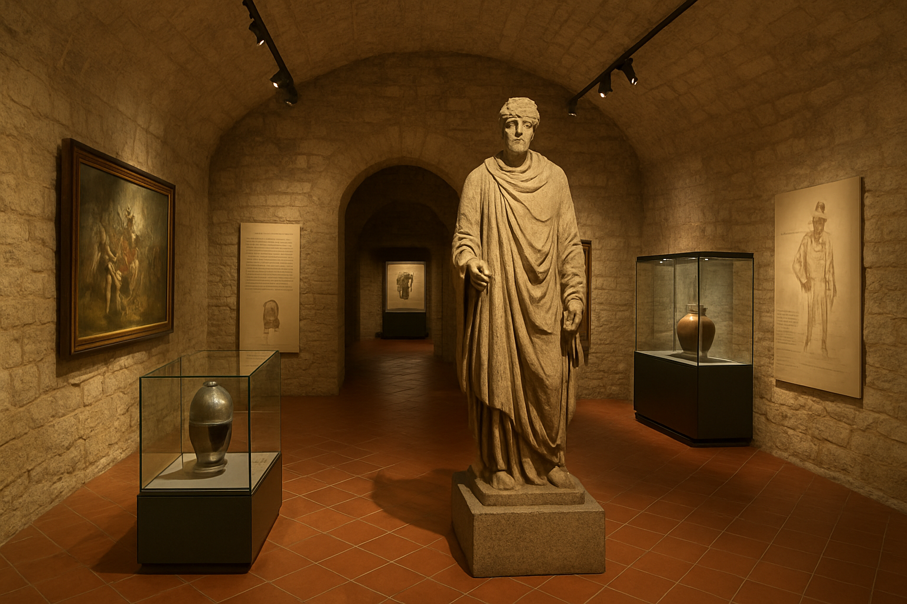
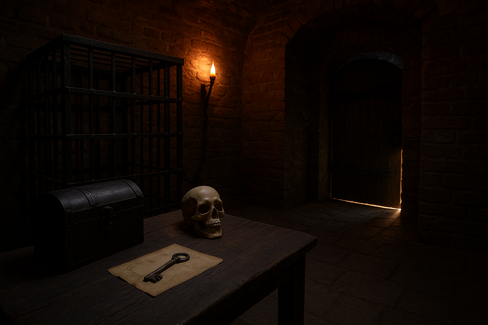
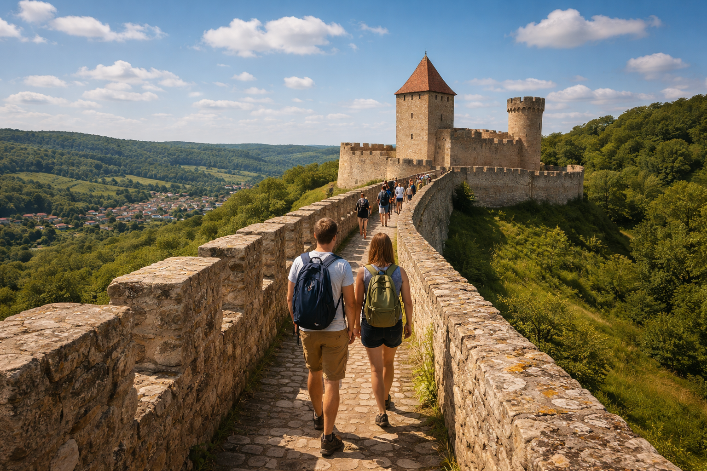
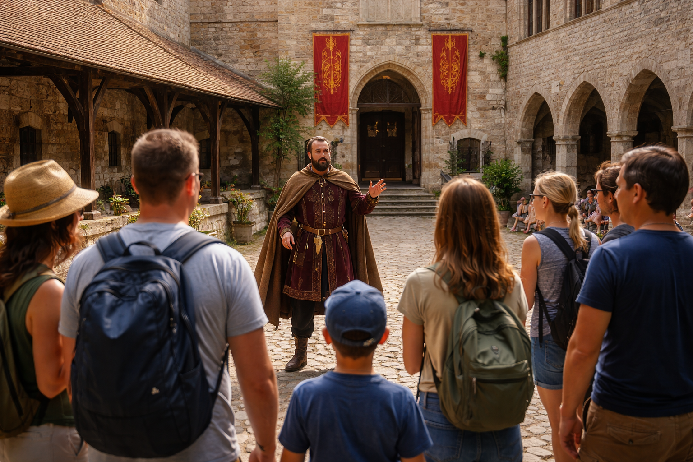
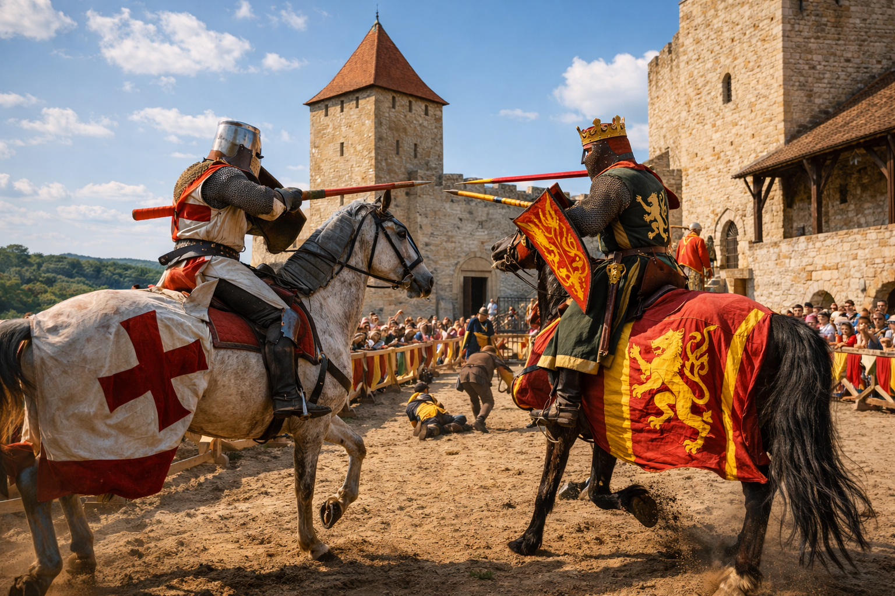
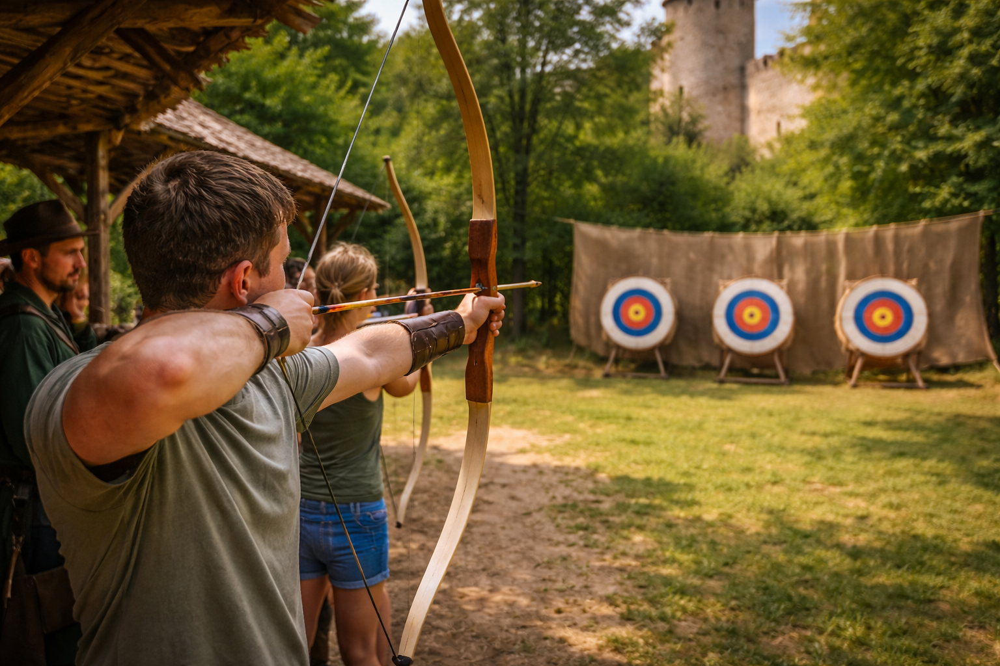
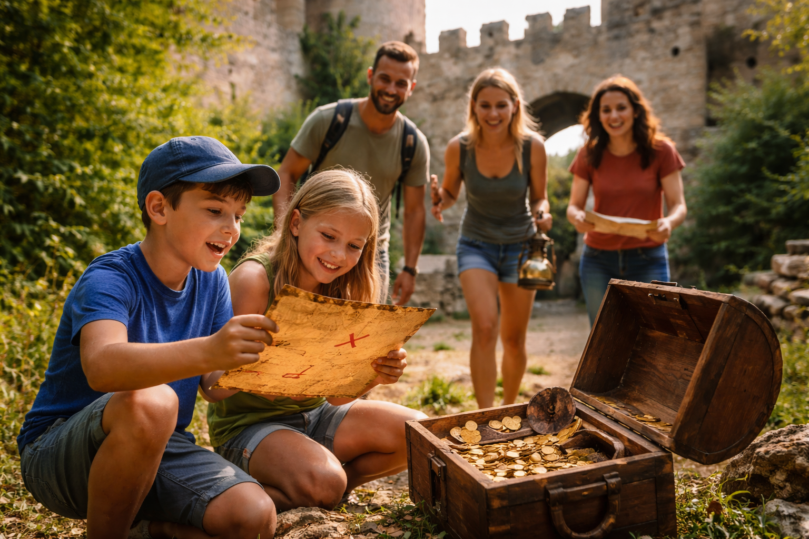
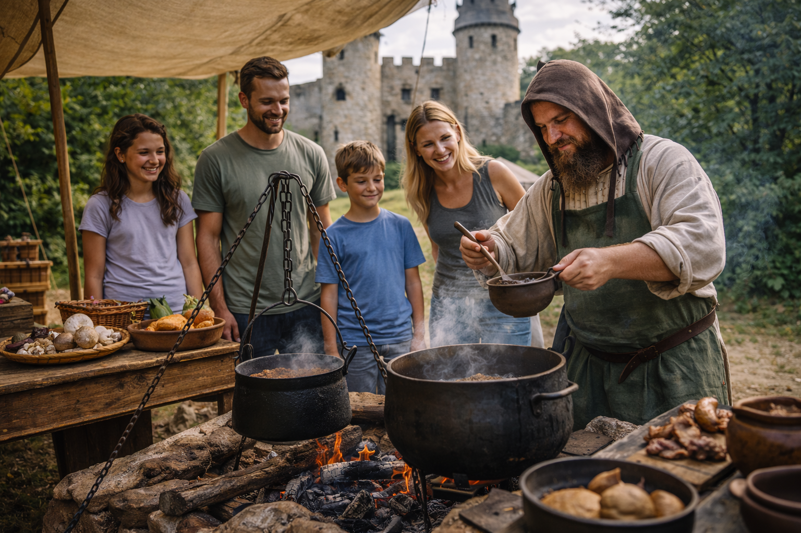

A főépület történelmi kiállítótermében a vár múltja elevenedik meg eredeti tárgyakon, fegyvereken és korhű berendezéseken keresztül. A kiállítás betekintést nyújt a vár mindennapjaiba és történelmi jelentőségébe.

A vár alagsorában található egykori börtönszárny izgalmas kihívásokkal várja a látogatókat. Logikai feladatok és rejtett nyomok segítségével kell kijutni a sötét, titkokkal teli helyiségekből.

A külső várfal panorámaútvonalán sétálva lenyűgöző kilátás nyílik a környező tájra. A túra során megismerhetők a vár védelmi rendszerei és stratégiai szerepe.

A vezetett séta során a belső udvar, a trónterem és a folyosók is megtekinthetők. A kalauz érdekes történetekkel és legendákkal hozza közelebb a vár múltját.

A nagy lovagudvarban látványos lovagi párviadalok és harci bemutatók elevenítik fel a középkor hangulatát. A program izgalmas élményt nyújt minden korosztály számára.
Az innovációs teremben modern technológia segítségével élhető át a vár egykori élete. A virtuális valóságban a látogatók visszautazhatnak a középkorba.

A külső gyakorlópályán biztonságos körülmények között próbálhatók ki a középkori fegyverek. A program során szakértők segítenek elsajátítani az alapokat.

A kijelölt útvonalon haladva izgalmas feladatok és rejtvények vezetnek el az elrejtett kincsekhez. A játék felfedezésre ösztönzi az egész várterületet.
A nagy étkezőteremben vagy díszteremben korhű ételek és hangulat várja a vendégeket. A lakoma igazi időutazást kínál ízekkel és látvánnyal.

Az alsó udvar szabadtéri kemencéjénél bemutatják, hogyan készültek az ételek a középkorban. A látogatók megismerhetik a korabeli alapanyagokat és főzési technikákat.
A belső vár, az alagutak és a bástyák fáklyafényben különleges hangulatot árasztanak. A túra során titokzatos történetek és legendák kelnek életre.
A digitális galériában érintőképernyők és látványos animációk segítik a múlt felfedezését. A kiállítás modern formában mutatja be a vár történetét.